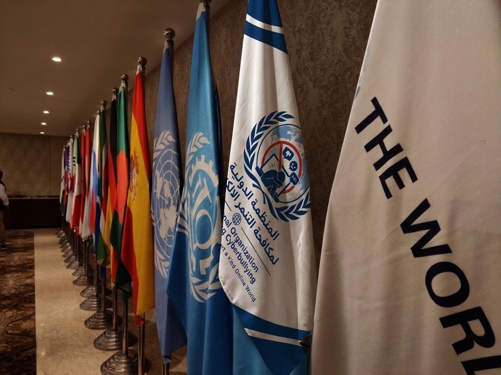

عالم رقمي آمن.. بلا تنمر
منظمة دولية رائدة تهدف إلى مكافحة جميع أشكال التنمر الإلكتروني، وتعزيز الوعي الرقمي، وحماية الأفراد في العالم الافتراضي، من خلال التعاون الدولي ونشر ثقافة الاحترام والمسؤولية الرقمية.
معرفة المزيد ←
المنظمة الدولية لمكافحة التنمر الإلكتروني (IOCP) هي مشروع افتراضي تعليمي يعرض تصورًا متكاملًا لمنظمة دولية تُعنى بالحد من التنمر الإلكتروني، وحماية كرامة الأفراد وحقوقهم في البيئة الرقمية، وتعزيز التعاون بين الدول والمؤسسات ذات الصلة.
تعمل المنظمة على تحقيق مجموعة من الغايات لحماية الأفراد وتعزيز بيئة رقمية آمنة.
تعرّفوا على مكونات المنظمة وأحكامها وأعمالها
إعداد المشروع